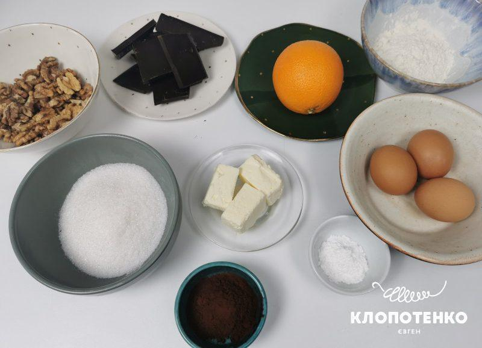
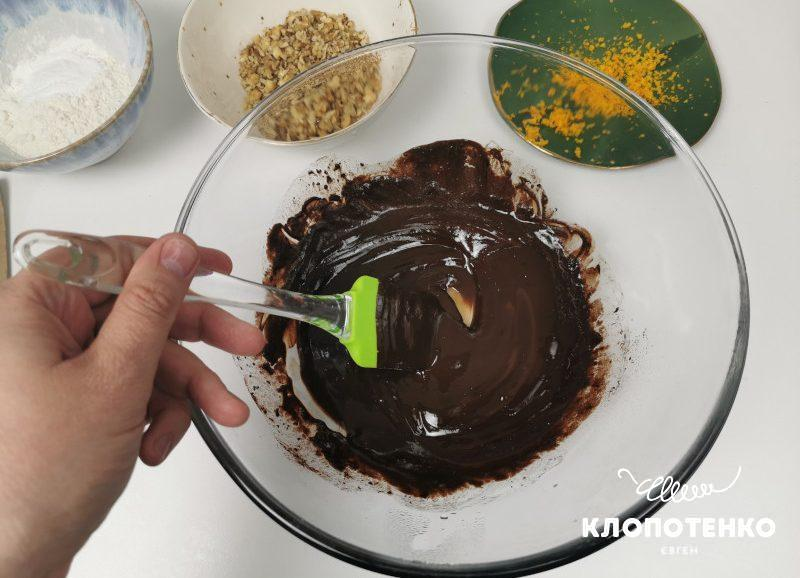
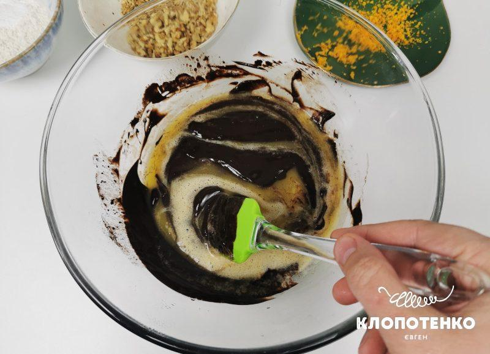
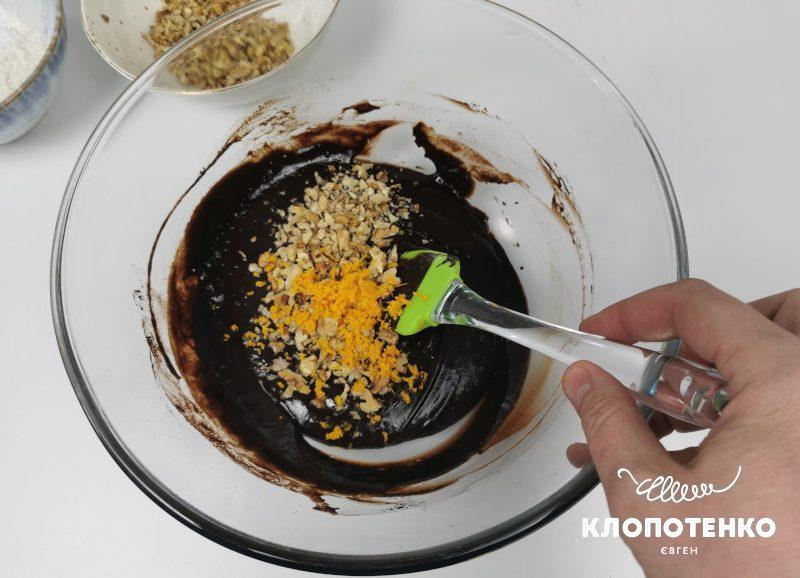
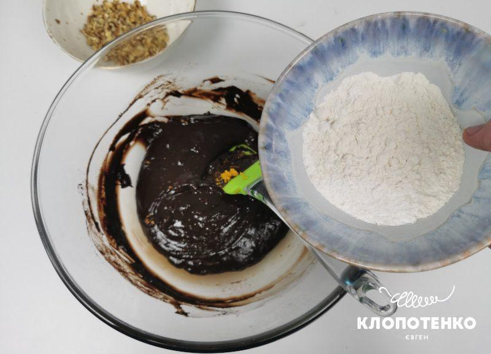
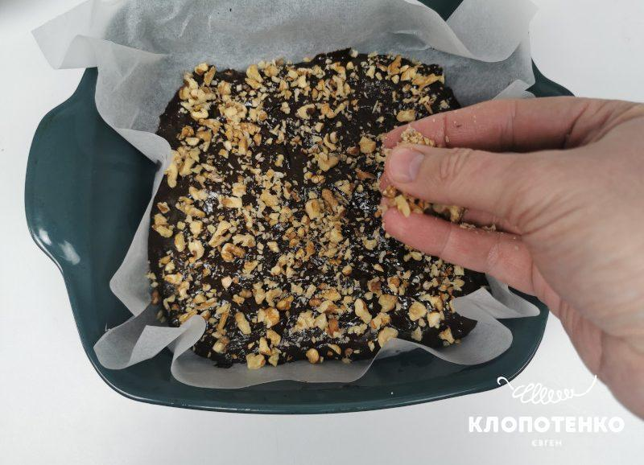

Традиційний американський десерт – брауні, завоював популярність у всьому світі. Все тому, що він не тільки
смачний, а й швидко готується з доступних інгредієнтів. Його назва походить від кольору десерту, а він буває
виключно “brown”, що в перекладі значить “коричневий”. У рецептах зазвичай використовують какао-порошок,
кероб або темний шоколад.
В Америці випікають великий брауні, який ріжуть на квадратні порційні шматочки.
Але можна зустріти цей десерт у вигляді торту чи тістечка. Знаємо точно, від форми його смак не залежить, що
не скажеш про додаткові інгредієнти. Брауні готують з горіхами, шматочками шоколаду, маком, вишнями та м’ятою.
Йому пасують будь-які напої, але ідеальний тандем – з прохолодним молоком.
Ми пропонуємо рецепт брауні з
апельсиновою цедрою та волоськими горіхами. І запевняємо вас, що робити десерт зовсім не складно. Головне –
дотримуватися чіткої кількості інгредієнтів та покроковки. У вас все вийде!
Якщо ви любите шоколадну
випічку, також рекомендуємо зробити печиво з горіхами, яке підійде для перекусу чи зустрічі гостей.
ПОРАДИ ЩОДО ПРИГОТУВАННЯ ШОКОЛАДНОГО БРАУНІ
Ідеально взяти справжній чорній шоколад, бо він має насичений смак та аромат. Вершкове масло використовуйте найвищої жирності. За бажанням, волоські горіхи замініть фундуком. Ту частину, що піде в тісто, можете попередньо посмажити на сухій пательні. У своїй випічці ми завжди використовуємо яйця з поміткою С1, які мають вагу 55-64 г. Якщо яйця менші за розміром, треба збільшити їх кількість.
ЯК ПРИГОТУВАТИ ШОКОЛАДНИЙ БРАУНІ З ГОРІХАМИ
ІНГРЕДІЄНТИ
- 150 темного шоколаду не менше 73%
- 1 апельсин (цедра)
- 60 г пшеничного борошна
- 100 г цукру
- 3 яйця
- 10 г какао порошку
- 80 г вершкового масла 82,5%
- 5 г розпушувача
- 100 г волоських горіхів
СМАЧНА ШОКОЛАДНА ВИПІЧКА: РЕЦЕПТ БРАУНІ З ГОРІХАМИ: ПОКРОКОВИЙ РЕЦЕПТ
- Підготуйте всі інгредієнти для приготування брауні. Вершкове масло дістаньте з холодильника, аби воно стало м’яким. 
- Спочатку розтопіть на паровій бані 150 темного шоколаду не менше 73%, постійно помішуючи, та додайте
до нього 80 г м’якого вершкового масла 82,5%. Перемішайте, зніміть з парової бані та залиште на 5
хвилин охолоджуватися.
 - Візьміть 3 яйця, вбийте їх в глибоку посуду, додайте 100 г цукру та добре збийте.
Можете використовувати міксер чи кухонну машину з насадкою. Кількість цукру не радимо зменшувати,
тому що не вийде характерна тягуча консистенція брауні всередині. Влийте розтоплений шоколад з
вершковим маслом в яєчну суміш. Взбийте міксером до однорідної консистенції.
 - Горіхи (100 г) подрібніть ножем. Розділіть на дві частини – одну будете використовувати для тіста, іншу – посипати зверху. Натріть цедру з одного апельсину не зачіпаючи білу частину цитрусу, бо вона гірчитиме. Додайте до тіста та знову перемішайте. 
- Пересипте 60 г пшеничного борошна в глибоку миску, додайте 10 г какао порошку та 5 г розпушувача.
Все це всипте до шоколадно-яєчної суміші та взбийте міксером. Додайте одну частину горіхів та
перемішайте силіконовою лопаткою.
 - Форму для запікання застеліть пергаментом. Це обов’язково умова, аби воно не прилипло в процесі запікання. Ми взяли форму діаметром 22 см. Перекладіть тісто, розрівняйте силіконовою лопаткою, а зверху посипте другою частиною горіхів. Ставте випікатися на 35-40 хвилин за температури 180 градусів. Поверхня брауні має взятися скоринкою. Потім вийміть з духовки, дайте повністю охолонути, а тільки тоді діставайте з форми та нарізайте шматочками. 